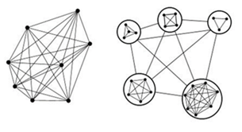
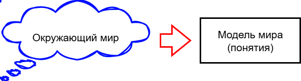
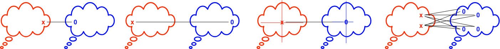
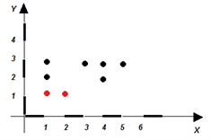
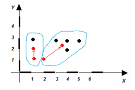
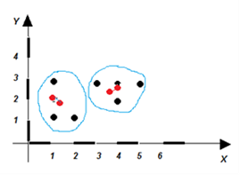
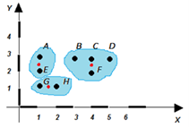
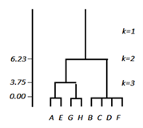
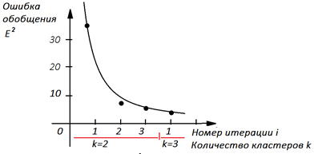
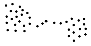

Лекция 26. Кластеризация – метод ИИ #7. Экземпляры и классы
Одним из способов борьбы с быстро растущим количеством связей в сложных системах является их разбиение на отдельные относительно плотно связанные подсистемы, кластеры.
Чтобы объединить некоторое множество элементов, считая их одним целым, применяют методы кластеризации. Если элементы, собранные в один кластер, можно обозначить новым
понятием, то появляются классы. Подсистема, класс, кластер - практически одно и тоже. Классы в отличие от кластеров обычно подразумевают иерархию
(подкласс, класс, надкласс), которая изображается деревом классов.

Для того чтобы оперировать в дальнейшем новыми понятиями, надо их образовать в своём сознании. «Образуются понятия из чего-то и для чего-то». Реальный мир бесконечен,
объекты в нём бесконечно разнообразны, то есть бесконечно отличаются друг от друга - не бывает абсолютно двух похожих кошек. Тем не менее, в нашем сознании есть понятие
«кошка». Но дать определение кошки в силу разнообразия кошачьих индивидуумов крайне затруднительно. С другой стороны, в нашем сознании существует конечное и небольшое число
понятий, которое отчетливо проводит границы между различными объектами окружающего мира.
Задача искусственного интеллекта состоит в выяснении, насколько один предмет похож на другой, насколько один можно заменить другим с целью уменьшения их количества и
сведения к конечному множеству. Где находятся границы классов, как расположены области, соответствующие классам, в пространстве признаков?
Сверхзадачей классификации является упорядочение признаков по степени похожести – вычисление базиса признаков, вычисление того, насколько независимы, то есть
перпендикулярны, признаки друг по отношению другу и насколько они зависимы друг от друга.
Фундаментальное понятие похожести объектов выражается математическим понятием «симметрия».
Симметрия
Современное понятие симметрии выходит далеко за пределы геометрии, например, симметрия типов элементарных частиц – если есть плюс, то должен быть и минус и т.п.
Ещё пример, если электроны одного атома поменять местами с электронами другого атома, то от обмена электронами никаких изменений в атомах не произойдет.
Тут можно говорить о симметрии атомов по отношению к обмену электронами.
Понятие симметрии включает в себя три момента.
Есть объект, симметрия которого рассматривается.
Есть изменение (преобразование), по отношению к которому рассматривается симметрия.
Есть сохранение (неизменность) объекта, которое выражает симметрию.
Симметрия выражает сохранение чего-то при каких-то изменениях или, иначе говоря, сохранение чего-то несмотря на изменения.
Примечание. В понятии симметрия ярко выражен принцип дуализма. В природе ни одна из крайностей не является истиной, природа существует всегда в равновесии
чего-то с чем-то. Яркий пример: объект существует благодаря закону, закон выражается уравнением, уравнение – это равновесие правой и левой части, причины и следствия,
действия и противодействия. Нарушение равновесия (закона) невозможно, так как приводит к движению, возвращающему нас к положению равновесия.
Что-то: геометрическая фигура, количество ударных слогов в стихотворении, ДНК растения, закипание воды при нагревании. Всё это наблюдается несмотря на изменение времени года,
места наблюдения и т.п. Поэтому такие явления рассматривают как законы природы. То есть их сохранение говорит о симметрии законов природы. А понятие симметрии имеет
глобальный смысл для мышления.
Например, берём некий фрукт – яблоко. Берём другой фрукт (другой запах, цвет, вкус, размер), смотрим на него и говорим – яблоко. То есть в этом примере объект – это фрукт.
Изменение – это смена одного фрукта другим. Однако, несмотря на это изменение наблюдается сохранение ряда свойств, признаков, общих для фрукта, который мы называем
яблоком.
Вдумайтесь! Симметрия законов природы во времени соответствует закону сохранения энергии. Симметрия законов природы по отношению к их переносам в пространстве соответствует
закону сохранения импульса. Симметрия законов природы по отношению к поворотам в пространстве соответствует закону сохранения момента импульса. То есть законы сохранения
энергии, импульса, момента импульса есть прямое следствие определённых симметрий законов природы. Более общего и более фундаментального понятия!
Итак. Первый момент: симметрия связана с сохранением, стабильностью. Она выделяет в изменчивом мире опорные точки, сохраняющиеся при различных изменениях (инварианты).
«Все возвращается на круги своя» (Екклесиаст) – не просто течёт, но возвращается, совершает цикл, сохраняется, несмотря на изменения.
Второй момент: симметрия выделяет общее во множестве явлений и объектов. Мир многообразен, но он един, так как проявляет черты общности. В мире царствуют именно простые,
общие законы, которые и ищет как вершину познания интеллект.
Третий момент: симметрия предопределяет необходимость, действуя в направлении сокращения числа возможных вариантов структур и вариантов поведения системы. Из мириадов атомов
природа реализует относительно малое число возможных вариантов (около ста в Периодической системе Д.И. Менделеева). Искусственный интеллект выделяет общее среди
бесконечного множества, выделяя из данных знания, модели, законы, уравнения, понятия.
Законы сохранения (наиболее общие законы) – это правила запрета, которые симметрия налагает на процессы, происходящие в природе. Это вносит в мир порядок, запрещая в нём хаос.
Но, симметрия не только запрещает, но и подсказывает единственно возможный вариант реализации, позволяя делать предсказания. То, ради чего бьётся наша мысль.
Цель мышления – предсказание, снижение рисков гибели и наступления неприятностей в будущем.
Заметим, что законы сохранения - законы равновесия. Явление, устройство, объект реализуется (существует), если выполняется закон, равновесие значений физических величин.
Равновесие закона реализуется при значении переменной, равной корню уравнения. Нахождение корней уравнения или системы уравнений является важнейшей задачей конструирования
полезных работающих устройств. Корень уравнения обеспечивает выполнение закона, а, значит, возможность его выполнения в машине, техническом устройстве, социальной
системе.
Интеллект как раз ищет законы более общего характера. А симметрия – центральное место в интеллектуальном мышлении. Любая научная классификация в равной мере использует как
сохранение (общность), так и изменения (различие) свойств классифицируемых объектов.
Напомним, что свойства – устойчиво проявляющееся конкретное влияние предметов на наши ощущения через органы чувств, включая косвенные. Например, красный, прохладный,
горький, большой, круглый, легкий.
Свойства – конкретные значения признаков. Примеры признаков – цвет, вкус, форма, масса и т.д.. Цвет принимает значение красный или синий. Вкус принимает конкретные значения
соленый или сладкий и так далее. Признак принимает конкретные значения свойств. В программировании признак – обозначается переменной, а свойство соответствует значению
переменной.
Предмет, вещь, сущность — одна из основных категорий нашего сознания, отдельный объект материального мира, обладающий относительной независимостью, объективностью и
устойчивостью существования.
Предмет задаётся своими структурными, функциональными, качественными и количественными характеристиками. Предмет в речи обозначается именем существительным, которое является
пересечением свойств, выражаемых именами прилагательными.
Понятие – есть пересечение свойств (И). Признак – есть объединение свойств (ИЛИ). Например, или красный, или желтый, или синий – все это означает одним
словом «цвет».
Понятие – отображённое в мышлении единство существенных свойств, связей, отношений предметов и явлений, выделяющее и обобщающее предметы до класса по выделенным
свойствам с помощью операций сравнения, анализа, синтеза, агрегации, идеализации, обобщения.
Содержание понятия – совокупность существенных свойств и связей предметов, отражённых в понятии. Содержание понятия отражается в смысле слова.
Смысл слова выражает общую информацию о предметах. Например, содержанием понятия «коррупция» является совокупность двух существенных признаков: «сращивание государственных
структур со структурой преступного мира» и «подкуп и продажность общественных и политических деятелей, государственных чиновников и должностных лиц».
О содержании понятия нельзя говорить в отрыве от его объёма. Объём понятия – совокупность (множество) предметов, объединённых этим понятием. Объём понятия
выражается в значении слова. Например, в понятие яблоко входят и красные, и зеленые, и мелкие, и крупные, и сладкие, и кислые яблоки. Значение слова – обозначаемый
им предмет или класс, или свойство. Например, под объёмом понятия «товар» подразумевается множество всех изделий, предлагаемых рынку для обмена сейчас, в прошлом или в
будущем. Ещё пример, «кентавр» – смысл слова есть, а значения нет.
Содержанием понятия «равнобедренный прямоугольный треугольник» будет указание на наличие в составе геометрической фигуры из трёх взаимно пересекающихся прямых двух углов,
равных 45°. Объёмом же такого понятия станет вся совокупность возможных равнобедренных треугольников.
Предметы, взятые в объёме, – класс.
Объём понятия может входить в объём другого понятия и составлять при этом лишь его часть. Например, объём понятия «фирменный знак» целиком входит в объём другого,
более широкого понятия «знак». При этом содержание первого понятия оказывается шире, потому что содержит больше отличительных признаков, чем содержание второго.
Действует следующий закон: чем шире объём понятия, тем проще его содержание, и наоборот.
Род. Родовым будет такое понятие, объём которого шире и полностью включает в себя объём другого понятия.
Вид. Видовым будет такое понятие, объём которого составляет лишь часть объёма родового понятия. Вид находится внутри рода.
Понятия, связанные отношением «состоит из», принято называть классами.
Любое понятие может быть полно охарактеризовано при помощи определения его содержания (иными словами – смысла) и установления предметов, с которыми данное понятие имеет
определённые связи, поэтому является системой.
Примечание. Бесконечный и безграничный мир наш конечный мозг может вместить в себя при условии, что он сожмёт (упростит) бесконечное число разнообразных экземпляров
в конечное число конечных кластеров (понятий), обобщив индивидуальности экземпляров насколько это возможно без большого нарушения смысла.
Кластеризация (классификация) – способ познания бесконечного мира конечными средствами, попытка свести бесконечность к конечности.
«Модель – бесконечное в конечном» (Д.И. Менделеев)

Отражение бесконечного мира (размытые нечеткие границы) в модель мира в
интеллектуальной системе (четкая строгая рамка)
Очевидно, что при разбиении на классы при образовании понятий возникает задача рационального определения границ разбиения. Такая граница характеризуется количеством классов и
количеством конкретных объектов внутри классов. Плохо, когда классов слишком мало, и в классах очень много разнородных объектов. Но также плохо, когда классов слишком много,
и в каждом классе очень мало объектов
Задача решается отслеживанием кривой суммарной ошибки отнесения объектов к классу (расстояние от объекта до центра множества объектов класса) в зависимости от количества
классов. Дополнительное разбиение на подклассы имеет смысл остановить, если приращение (выгода от разбиения на большее количество классов) ошибки становится меньше, чем
число е. Наглядно такое разбиение можно отобразить в виде кластеров, входящих друг в друга.
Кластер – относительно плотное множество из предметов по сравнению с другими областями пространства признаков. Иногда используют название таксон.
Кластерный анализ – метод группировки совокупности объектов по значениям признаков для получения нескольких более или менее однородных плотных групп, четко отличающихся
друг от друга, распределение объектов по классам.
Кластерный анализ придает количественную меру основному приёму искусственного интеллекта – «сходство-различие». Измерив «сходство-различие», кластерный анализ позволяет
выбирать и упорядочивать предметы по параметру сходства.
Для кластерного анализа необходимо определить:
- пространство признаков (осей координат),
- предметы, как точки этого пространства (экземпляры), экземпляры обладают свойствами (конкретными числовыми значениями признаков на осях координат),
- метрику – способ измерения расстояния между двумя предметами в пространстве, характеризующий их различие,
- критерий (правило принятия решения) объединения предметов в класс по метрике.
Например, заданы {A, B, C,…, H} – объекты (предметы), каждый из которых имеет Р признаков (x,y,…).
Часто объекты заданы как записи базы данных с полями в виде признаков. Допустим, что производились измерения по двум координатам продаваемой продукции:
вес товара в упаковке и цена единицы упакованного товара. Товаровед решил разделить эту продукцию на 2 кластера, расположив её по двум разным витринам
(k =2). Экспериментально были измерены 8 экземпляров (видов продукции).
Название экземпляра
Вес, x
Цена, у
A
1
3
B
3
3
C
4
3
D
5
3
E
1
2
F
4
2
G
1
1
H
2
1
Обозначим как Rij – расстояние между объектами i и j. Объект представлен вектором свойств-признаков.
Чтобы сравнение было корректным, необходимо выполнение трёх условий:
Rii = 0 тогда и только тогда, когда i = j
Rij = Rji - рефлексивность
Rij <= Rik + Rkj - транзитивность
Если признаки у объектов измерены в различных единицах, то надо нормировать значения признаков по одной из формул, основной из которых является формула масштабирования:
\({Y}= \frac{x-x_{min}}{x_{max}-x_{min}}\)
Далее следует выбрать метрику. Известны Евклидова метрика, метрика Минковского, Чебышева, Пирсона, расстояние Хэмминга, метрика французских железных дорог и другие.
Пример применения Евклидовой метрики. Расстояние R18, то есть между объектами А и Н, равно
\( \sqrt{(2- 1)^2+(1 -3)^2} = \sqrt{5} \)
Далее следует выбрать меру сходства классов, содержащих в себе множество объектов. Во время слияния нескольких объектов в один класс возникает проблема вычисления
расстояния между классами, которые имеют размытые границы.
Перечислим известные меры расстояния между классами: правило ближайшего соседа - расстояние между кластерами определяется как расстояние между двумя наиболее близкими
объектами в различных кластерах; правило дальнего соседа - расстояние между кластерами определяется как расстояние между двумя наиболее далёкими объектами в
различных кластерах; расстояние измеряют по центрам тяжести классов; по длине средней связи.

Метод кластеризации "k-means"
Метод изобретен MacQueen J.B. в 1967 г. и позволяет определить, в какие компактные группы входят заданные экземпляры.
Метод требует указать, на сколько кластеров k требуется разбить множество объектов (точек, экземпляров). Поэтому процедуру прогоняют несколько раз для различных исходных
значений k.
Алгоритм метода:
Задаётся количество кластеров k.
«Случайно» выбираются их центры.
Текущая точка (объект) признаётся принадлежащей кластеру k, если к его центру она находится ближе по выбранной нами мере, чем к центрам других кластеров.
Пункт 3 повторяется для всех точек.
После того как все точки нашли своего нового «хозяина», пересчитываются центры изменившихся кластеров, например, как центры тяжести всех точек,
которые содержит кластер.
Пункты 3-4 повторяются до тех пор, пока точки не перестают переходить из кластера в кластер (или центры кластеров не перестают смещаться).
Рассмотрим пример. Примем случайным образом, что центры кластеров располагаются в точках с координатами (1,1) и (2,1).
Они обозначены на рисунке красным цветом.
Вычислим расстояния от i-той точки до каждого из этих центров. Расстояние будем измерять евклидовой мерой. Точку отнесем к тому кластеру, расстояние
до которого будет меньше.

Экземпляры и начальное (случайное) положение центров двух классов
Итерация 1.
Например, точка А находится на расстоянии
\( \ r_{1} = \sqrt{(1 - 1)^2+(3 - 1)^2} = 2 \) от центра тяжести первого кластера и на расстоянии
\( \ r_{2} = \sqrt{(1 - 2)^2+(3 - 1)^2} = 2,24 \) от центра тяжести второго.
То есть точка А ближе к первому кластеру, чем ко второму (2<2.24), поэтому помещаем А в первый кластер.
Информация об остальных точках приведена в таблице расстояний
Название экземпляра, точка с координатами
r1 от точки до центра тяжести 1 (1,1)
r2 от точки до центра тяжести 2 (2,1)
Номер ближайшего к точке кластера k
A (1,3)
2
2.24
1
B (3,3)
2.83
2.24
2
C (4,3)
3.61
2.83
2
D (5,3)
4.47
3.61
2
E (1,2)
1
1.41
1
F (4,2)
3.16
2.24
2
G (1,1)
0
1
1
H (2,1)
1
0
2
Минимальное расстояние min(r1,r2) выделено в каждой строке таблицы цветом. То есть в кластер 1 попадают точки {A,E,G},
а в кластер 2- {B,C,D,F,H}. Суммарное расстояние от точек до центров их кластеров составляет:
\( \ E = \sqrt{2^2+2.24^2+2.83^2+3.61^2+1^2+2.24^2+0^2+0^2} = 6 \)
Теперь кластер 1 имеет центр тяжести в новой точке (арифметическое среднее координат входящих в него точек):
((1+1+1)/3, (3+2+1)/3) = (1,2). А кластер 2 имеет центр тяжести в точке: ((3+4+5+4+2)/5, (3+3+3+2+1)/5) = (3.6,2.4).
Так как центры тяжести кластеров поменяли свое положение, то процедуру следует продолжать. Кластеры 1 и 2 показаны на рисунке областями
с контурами синего цвета. Красные вектора показывают смещение центров тяжести кластеров в новое положение.

Пример расположения точек по кластерам на первой итерации
Итерация 2.
Снова измерим расстояние от каждой точки до вновь вычисленного центра каждого кластера.
Название экземпляра, точка с координатами
r1 от точки до центра тяжести 1 (1,2)
r2 от точки до центра тяжести 2 (3.6,2.4)
Номер ближайшего к точке кластера k
A (1,3)
1
2.67
1
B (3,3)
2.24
0.85
2
C (4,3)
3.16
0.72
2
D (5,3)
4.12
1.52
2
E (1,2)
0
2.63
1
F (4,2)
3
0.57
2
G (1,1)
1
2.59
1
H (2,1)
1.41
2.13
1
Сравнивая расстояния от точки до кластера 1 и кластера 2, определим, к какому кластеру каждая точка больше тяготеет на второй итерации
(в нашем случае точка Н перебежала из кластера 2 в кластер 1). Минимальное расстояние выделено в таблице цветом.
То есть в кластер 1 попадают точки {A,E,G,H}, а в кластер 2 - {B,C,D,F}. Суммарное расстояние от точек до центров их новых кластеров составляет:
\( \ E = \sqrt{1^2+0.85^2+0.72^2+1.52^2+0^2+0.57^2+1^2+1.41^2} = 2.8 \) (расстояние по сравнению с распределением точек по кластерам на первой итерации уменьшилось,
то есть распределение точек по кластерам улучшилось в 6/2.8 = 2.14 раза).
Кластер 1 сменил свое положение и имеет центр тяжести в точке: ((1+1+1+2)/4, (3+2+1+1)/4)=(1.25, 1.75).
Кластер 2 имеет центр тяжести в точке: ((3+4+5+4)/4, (3+3+3+2)/4)=(4, 2.75). Так как центры тяжести кластеров поменяли свое положение, то процедуру следует
продолжать. Кластеры 1 и 2 показаны на рисунке синим цветом. Красные вектора показывают смещение центров тяжести кластеров в новое положение.

Пример расположения точек по новым кластерам на второй итерации
Итерация 3.
Снова измерим расстояние от каждой точки до центра каждого кластера.
Название экземпляра, точка с координатами
r1 от точки до центра тяжести 1 (1.25, 1.75)
r2 от точки до центра тяжести 2 (4, 2.75)
Номер ближайшего к точке кластера k
A (1,3)
1.27
3.01
1
B (3,3)
2.15
1.03
2
C (4,3)
3.02
0.25
2
D (5,3)
3.95
1.03
2
E (1,2)
0.35
3.09
1
F (4,2)
2.76
0.75
2
G (1,1)
0.79
3.47
1
H (2,1)
1.06
2.66
1
Сравнивая расстояния от точки до кластера 1 и кластера 2, определим, к какому из новых кластеров точка больше тяготеет (в нашем случае все точки остались в
старых кластерах). Минимальное расстояние выделено в таблице цветом: кластер 1 - точки {A,E,G,H}, кластер 2 - {B,C,D,F}.
Суммарное расстояние от точек до центров их кластеров составляет:
\( \ E = \sqrt{1.27^2+1.03^2+0.25^2+1.03^2+0.35^2+0.75^2+0.79^2+1.06^2} = 2.5 \)
(расстояние уменьшилось, то есть распределение точек по кластерам улучшилось в 2,8/2,5=1.12 раза).
Центры тяжести кластеров не поменялись, так как не изменилось распределение точек по кластерам. Процедура кластеризации останавливается
Ответ: в кластер 1 вошли точки {A,E,G,H}, в кластер 2 - {B,C,D,F}.
Примечание. Процедуру следует провести при различных значениях k = 2, 3, 4, т.д.
На рисунке показано дальнейшее разбиение исходного множества на кластеры (k=3).
Суммарная ошибка распределения точек по кластерам Е составит при этом 1.94.


Разбиение исходного множества на k=3 и дерево классов
Если ошибка Е с ростом очередного значения k меняется незначительно, то дальнейшее разбиение исходного множества экземпляров на всё более мелкие кластеры
не имеет особого смысла.

Пример графика характерной зависимости ошибки E2 разнесения объектов по классам от
номера итерации i метода k-means и количества кластеров k
Задания
В зависимости от комбинации принятых за основу исходных принципов кластеризации, исходных и начальных данных могут получаться различные решения задачи
кластеризации. Для примера поэкспериментируйте со структурами, изображёнными ниже, разбивая множество точек на кластеры, используя различные метрики и меры.

Задайтесь своим примером для метода k-means (не менее 3D, не менее 15 экземпляров). Например, можно задаться количеством признаков, достаточным для отличия
кошек от собак и различения их по видам. Проведите классификацию множества экземпляров для случаев: k=2, k=3, k=4. Нарисуйте дерево классов.
Приведите графическую иллюстрацию. Приведите функцию суммарной ошибки E(k). Дайте определения классам.